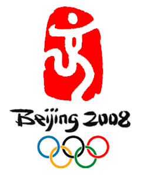

|
  Will was defeated in his first match against Ruben Houkes of the Netherlands. Will went the distance and after the full 5 minute match, both competitors had been penalized with 1 shido, giving them each a koka but Houkes had also scored a Yuko. The Olympic draw style is repechage. Frazer Will would only be able to compete in the repechage if Houkes won his pool. If Houkes was beaten at any point in the draw, Will would not have been able to compete again. In Houkes' second match, he defeated Lavrentios Alexanidis of Greece. He then won Pool A by defeating Javier Antonio Guedez Sanchez of Venezuela in his 3rd match by a Yuko. This put Frazer Will into the repechage! Frazer Will faced Lavrentios Alexanidis of Greece in the first round of the repechage. Will defeated him by Ippon at 4:43. VIDEO! Frazer Will then faced Javier Antonio Guedez Sanchez of Venezuela in the second round of the repechage. Will defeated him by Ippon at 1:54. In Frazer Will's fouth match, the third round of the repechage, he was defeated by Rishod Sobirov of Uzbekistan after a full 5 minutes. Sobirov scored a yuko and koka for 15 and 10 second holds. Sobirov finished with a bronze medal. Houkes who defeated Frazer in his first match also went on to win the Olympic Bronze medal. Further results can be found at the Beijing IJF website. Choose a server and then on the left, choose the weight division you are seeking results for. Official Olympic results can also be found on the Beijing Olympic website.
Other Olympic results:
Pool B Round 1 - Bye Pool B Round 2 - versus Roberto Ibanez of Ecudor, won by Yuko after 5 minutes Pool B Round 3 - versus Benjamin Darbelet of France, lost by Koka after 5 minutes Repechage - versus Rachid Rguig of Morocco, won by Waza-ari-awasete-Ippon at 2:36 Repechage - versus Alim Gadanov of Russia, lost by Ippon at 0:16 into Golden Score Overall standing - 9th place. Sholpan Kaliyeva (Kazakhstan): Women under 52 Kg Pool A Round 1 - Bye Pool A Round 2 - versus Pei-Chun Shih of Chinese Taipei, won by Koka after 5 minutes Pool A Round 3 - versus Kum Ae An of Democratic People's Republic of Korea, lost by Waza-ari-awasete-Ippon at 1:35 Repechage - versus Flor Angela Velasquez Artahona of Venezuela, won by Yuko after 5 minutes Repechage - versus Ilse Heylen of Belgium, won by Ippon at 0:13 Fight for Third - versus Soraya Haddad of Algeria, lost by Waza-ari at 5:00 VIDEO! Overall standing - 5th place.
Pool A Round 1 - versus Joao Pina of Portugal, lost by Yuko at 1:49 into Golden Score Joao Pina lost in Round 2 so Nicholas Tritton did not qualify for the repechage |